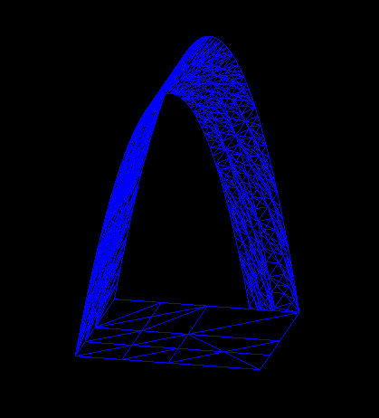
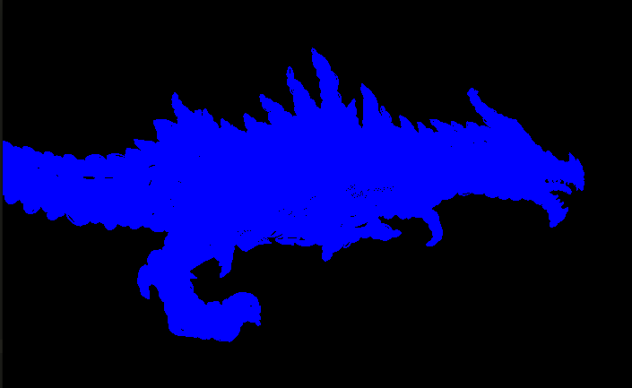

Simple wireframe with uniform subdivison
./as3 test.bez 0.05
Simple wireframe with hidden line mode enabled (press 'h')
./as3 test.bez 0.05

Simple wireframe with adaptive subdivision
./as3 test.bez 0.001 -a
Adaptive subdivision with shading
./as3 test.bez 0.001 -a
Uniform subdivision wireframe
./as3 teapot.bez 0.05
Uniform subdivision wireframe with hidden line mode enabled
./as3 teapot.bez 0.05
Adaptive subdivision with flat shading (intentional low poly)
./as3 teapot.bez 0.1 -a
Adaptive subdivision with smooth shading (intentional low poly)
./as3 teapot.bez 0.1 -a
Adaptive subdivision with smooth shading (high poly)
./as3 teapot.bez 0.001 -a

Simple teacup
./as3 teacup.bez 0.05
Skyrim's Alduin. Sorry Paarthurnax
./as3 alduin.bez 0.5 (Converted from obj to bez beforehand)
Flying
./as3 alduin.bez 0.5
I summon thee, No-eyes Blue Dragon!
./as3 alduin.bez 0.5

Too many patches to get a good wireframe
./as3 alduin.bez 0.5
Beat Stanfurd!
./as3 armadillo.bez 1 (huge file when converted from bez to obj, so didn't include. Also the reason for the non-existant step size)
The bunny from raytracer
./as3 -o bunny.obj 0.5
(Duel berettas)/2
./as3 -o beretta.obj 1 (more subdivision = more ugly)
P90
./as3 -o p90.obj 1